| Customization:
Weather Icons |
After you have customized the templates you may decide that its time to give those
weather icons a face lift. The specifications for updating the icons isn't
that hard, you will need graphic software, such as Paint Shop Pro, to develop
new ones. Also, HAMweather provides custom
design services which may be of use as well.
There are two sets of icons for possible customization. The main set that
HAMweather uses are the icons you see when obtaining zone forecasts and hourly
observations. There is a second set of weather icons that are used by HAMweather Pro
. These are the small weather icons that HAMweather Pro uses in the dynamically
generated national summary and forecast maps. Since both of these sets have
different specifications, instructions for modifying each have been separated into two
categories, HAMweather icons and HAMweather Pro icons.
The standard HAMweather Icons are the easiest to customize for they have the least
specifications. The default graphics that come with HAMweather are 256 color gifs
with a width of 55 pixels and a height of 58 pixels. The graphics that you develop can be
of any type or size, but you should keep the goal of a small file size in mind to speed
downloads.
The are several weather types that you design graphics for. Actually many of the
weather types use the same icons. HAMweather allows you to define different weather
icons to use for night forecasts. Again, the night icons can use the same graphics used
else where. The HAMweather web administration allows you to define what icons to
use, both day and night for each forecast type.
Below is a table of the default weather types and their corresponding day & night
time weather icons.
| Weather Condition |
Day Time Icon |
Night Time Icon |
| variable cloudiness |
pcloudy.gif |
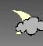
pcloudyn.gif |
| variable clouds |
pcloudy.gif |
pcloudyn.gif |
| blowing snow |
blowingsnow.gif |
blowingsnow.gif |
| drifting snow |
blowingsnow.gif |
blowingsnow.gif |
| rain and snow |
rainandsnow.gif |
rainandsnow.gif |
| snow and rain |
rainandsnow.gif |
rainandsnow.gif |
| rain shower |
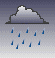
showers.gif |
showers.gif |
| snow shower |
snowshowers.gif |
snowshowers.gif |
| shower |
showers.gif |
showers.gif |
| freezing rain |
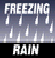
freezingrain.gif |
freezingrain.gif |
| drizzle |
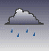
drizzle.gif |
drizzle.gif |
| mist |
drizzle.gif |
drizzle.gif |
| fog |

fog.gif |
fog.gif |
| smoke |

smoke.gif |
smoke.gif |
| thunderstorm |
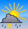
tstorm.gif |
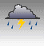
tstormn.gif |
| flurries |
flurries.gif |
flurries.gif |
| fair |
fair.gif |
fair.gif |
| snow |
snow.gif |
snow.gif |
| rain |
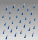
rain.gif |
rain.gif |
| mostly sunny |
sunny.gif |
sunnyn.gif |
| partly sunny |
pcloudy.gif |
pcloudyn.gif |
| sunny |
sunny.gif |
sunnyn.gif |
| increasing clouds |
mcloudy.gif |
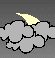
mcloudyn.gif |
| increasing cloudiness |
mcloudy.gif |
mcloudyn.gif |
| mostly cloudy |
mcloudy.gif |
mcloudyn.gif |
| partly cloudy |
pcloudy.gif |
pcloudyn.gif |
| cloudy |
cloudy.gif |
cloudy.gif |
| windy |
wind.gif |
wind.gif |
| sleet |
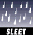
sleet.gif |
sleet.gif |
| partial clearing |
mcloudy.gif |
mcloudyn.gif |
| clearing |
fair.gif |
fair.gif |
| clear |
fair.gif |
fair.gif |
|
The next set of icons are the the HAMweather Pro weather icons. These images are the
ones used on the National Forecast and Summary maps. When you customize these
there are a few specifications that you must follow:
HAMweather Pro Icon Restrictions
- The images have to be 32 x 32 (height and width both = 32)
- On the Color Palette, pos 15 must be white (r-FF g-FF b-FF)
- The parts of the icon that are to be transparent should use the white that is set in the
palette position 15
|
Following is a table of the HAMweather Pro Icons. You will notice that this list
is a bit smaller than the standard icons and also currently only one set of icons are
supported. That means day and night use the same icons. The feature of night
icons may be added in the future for the National Summary, so you may want to go ahead and
create some night icons. Also you can set the icons to corresponding weather
conditions using the HAMweather web administration.
| Weather Condition |
Weather Icon |
| sunny |
sunny.gif |
| showers |
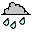
rain.gif |
| partly cloudy |
pcloudy.gif |
| mostly cloudy |
mcloudy.gif |
| fair |
pcloudy.gif |
| clear |
sunny.gif |
| rain |
rain.gif |
| snow |
snow.gif |
| cloudy |
cloudy.gif |
| misty |
rain.gif |
| windy |
wind.gif |
| Thunderstorms |
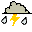
tstorm.gif |
| Snow Shower |
snowshowers.gif |
| Rain and snow |
rainsnow.gif |
| haze |
pcloudy.gif |
|
What's this talk about themes?